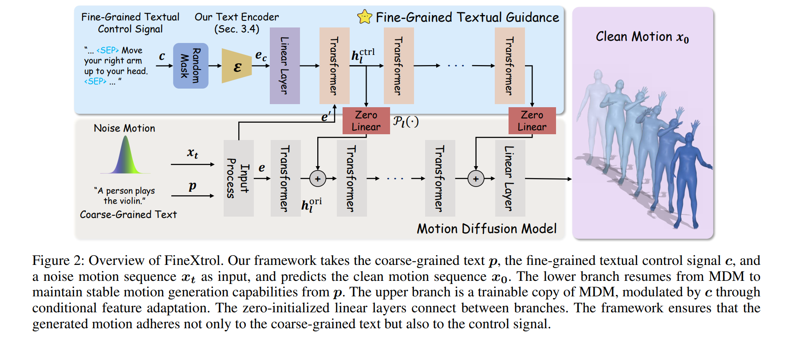

FineXtrol: Controllable Motion Generation via Fine-Grained Text
Prompt: A man is walking forward slowly.
Prompt: The person sat down on a chair.
Prompt: A person walks in a clockwise circle.
Prompt: A person is walking in an s shape.
Prompt: A person bends down and touches the ground with their left hand.
Prompt: A man who is throwing something with his right hand.
Abstract
Recent works have sought to enhance the controllability and precision of text-driven motion generation. Some approaches leverage large language models (LLMs) to produce more detailed texts, while others incorporate global 3D coordinate sequences as additional control signals. However, the former often introduces misaligned details and lacks explicit temporal cues, and the latter incurs significant computational cost when converting coordinates to standard motion representations.
To address these issues, we propose FineXtrol, a novel control framework for efficient motion generation guided by temporally-aware, precise, user-friendly, and fine-grained textual control signals that describe specific body part movements over time. In support of this framework, we design a hierarchical contrastive learning module that encourages the text encoder to produce more discriminative embeddings for our novel control signals, thereby improving motion controllability.
Quantitative results show that FineXtrol achieves strong performance in controllable motion generation, while qualitative analysis demonstrates its flexibility in directing specific body part movements.
Methodology
FineXtrol adopts a dual-branch architecture based on the ControlNet paradigm. The lower branch (MDM Transformer Encoder) ensures the stability of general motion generation, while the upper branch (Trainable Copy) is responsible for injecting fine-grained textual control signals.
To enhance the text encoder's sensitivity to fine-grained instructions, we propose a Hierarchical Contrastive Learning module. It progressively trains the encoder at the Sentence, Snippet, and Sequence levels to distinguish subtle differences in body part movements and temporal orders.
Comparisons🚧
We compare FineXtrol with state-of-the-art methods like CoMo and OmniControl. FineXtrol demonstrates superior capability in executing precise instructions such as "Raise your left leg in 1.0-1.5s" without sacrificing motion quality.
BibTeX
@misc{shen2025finextrolcontrollablemotiongeneration,
title={FineXtrol: Controllable Motion Generation via Fine-Grained Text},
author={Keming Shen and Bizhu Wu and Junliang Chen and Xiaoqin Wang and Linlin Shen},
year={2025},
eprint={2511.18927},
archivePrefix={arXiv},
primaryClass={cs.CV},
url={https://arxiv.org/abs/2511.18927},
}